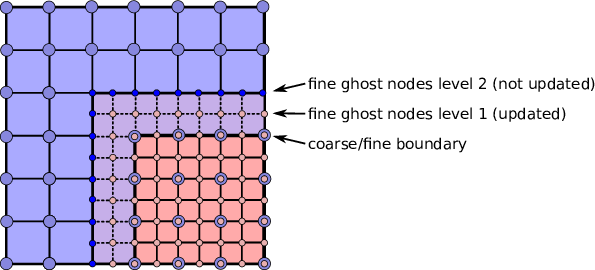

MLMG and Linear Operator Classes
Multi-Level Multi-Grid or MLMG is a class for solving the linear
system using the geometric multigrid method. The constructor of
MLMG takes the reference to MLLinOp, an abstract base
class of various linear operator
classes, MLABecLaplacian, MLPoisson,
MLNodeLaplacian, etc. We choose the type of linear operator
class according to the type of linear system to solve. Examples of the
linear operators include
MLABecLaplacianfor cell-centered canonical form (equation (1)).MLPoissonfor cell-centered constant coefficient Poisson’s equation \(\nabla^2 \phi = f\).MLNodeLaplacianfor nodal variable coefficient Poisson’s equation \(\nabla \cdot (\sigma \nabla \phi) = f\).
The constructors of these linear operator classes are in the form like below
MLABecLaplacian (const Vector<Geometry>& a_geom,
const Vector<BoxArray>& a_grids,
const Vector<DistributionMapping>& a_dmap,
const LPInfo& a_info = LPInfo(),
const Vector<FabFactory<FArrayBox> const*>& a_factory = {},
const int a_ncomp = 1);
It takes Vectors of Geometry, BoxArray and
DistributionMapping. The arguments are Vectors because MLMG can
do multi-level composite solves. If you are using it for single-level,
you can do
// Given Geometry geom, BoxArray grids, and DistributionMapping dmap on single level
MLABecLaplacian mlabeclaplacian({geom}, {grids}, {dmap});
to let the compiler construct Vectors for you. Recall that the
classes Vector, Geometry, BoxArray, and
DistributionMapping are defined in chapter Basics. There are
two new classes that are optional parameters. LPInfo is a
class for passing parameters. FabFactory is used in problems
with embedded boundaries (chapter Embedded Boundaries).
After the linear operator is built, we need to set up boundary conditions. This will be discussed later in section Boundary Conditions.
Coefficients
Next, we consider the coefficients for equation (1).
For MLPoisson, there are no coefficients to set so nothing needs to be done.
For MLABecLaplacian, we need to call member functions setScalars,
setACoeffs, and setBCoeffs.
The setScalars function sets the scalar constants \(A\) and \(B\)
void setScalars (Real a, Real b) noexcept;
For the general case where \(\alpha\) and \(\beta\) are scalar fields, we use
void setACoeffs (int amrlev, const MultiFab& alpha); void setBCoeffs (int amrlev, const Array<MultiFab const*,AMREX_SPACEDIM>& beta);
For the case where \(\alpha\) and/or \(\beta\) are scalar constants, there is the option to use
void setACoeffs (int amrlev, Real alpha); void setBCoeffs (int amrlev, Real beta); void setBCoeffs (int amrlev, Vector<Real> const& beta);
Note, however, that the solver behavior is the same regardless of which functions you
use to set the coefficients. These functions solely copy the constant value(s) to a MultiFab
internal to MLMG and so no appreciable efficiency gains can be expected.
For MLNodeLaplacian,
one can set the variable sigma with the member function
void setSigma (int amrlev, const MultiFab& a_sigma);
or a constant sigma during declaration or definition
MLNodeLaplacian (const Vector<Geometry>& a_geom,
const Vector<BoxArray>& a_grids,
const Vector<DistributionMapping>& a_dmap,
const LPInfo& a_info = LPInfo(),
const Vector<FabFactory<FArrayBox> const*>& a_factory = {},
Real a_const_sigma = Real(0.0));
void define (const Vector<Geometry>& a_geom,
const Vector<BoxArray>& a_grids,
const Vector<DistributionMapping>& a_dmap,
const LPInfo& a_info = LPInfo(),
const Vector<FabFactory<FArrayBox> const*>& a_factory = {},
Real a_const_sigma = Real(0.0));
Here, setting a constant sigma alters the internal behavior of the solver making it more
efficient for this special case.
The int amrlev parameter should be zero for single-level
solves. For multi-level solves, each level needs to be provided with
alpha and beta, or sigma. For composite solves, amrlev 0 will
mean the lowest level for the solver, which is not necessarily the lowest
level in the AMR hierarchy. This is so solves can be done on different sections
of the AMR hierarchy, e.g. on AMR levels 3 to 5.
After boundary conditions and coefficients are prescribed, the linear operator is ready for an MLMG object like below.
MLMG mlmg(mlabeclaplacian);
Optional parameters can be set (see section Parameters),
and then we can use the MLMG member function
Real solve (const Vector<MultiFab*>& a_sol,
const Vector<MultiFab const*>& a_rhs,
Real a_tol_rel, Real a_tol_abs);
to solve the problem given an initial guess and a right-hand side.
Zero is a perfectly fine initial guess. The two Reals in the argument
list are the targeted relative and absolute error tolerances. The relative
error tolerance is hard-coded to be at least \(10^{-16}\).
Given the linear system \(Ax = b\), the solver will terminate when the
max-norm of the residual (\(b - Ax\)) is less than
std::max(a_tol_abs, a_tol_rel * max_norm). By default, max_norm is
equal to the greater of rhs max-norm and residual max-norm. This behavior can
be modified using the MLMG member function setConvergenceNormType (MLMGNormType norm),
where the available options are
MLMGNormType::greater: The default.MLMGNormType::bnorm:max_normis set to rhs max-norm.MLMGNormType::resnorm:max_normis set to residual max-norm.
Set the absolute tolerance to zero if one does not have a
good value for it. The return value of solve is the max-norm error.
After the solver returns successfully, if needed, we can call
void compResidual (const Vector<MultiFab*>& a_res,
const Vector<MultiFab*>& a_sol,
const Vector<MultiFab const*>& a_rhs);
to compute the residual (i.e., \(f - L(\phi)\)) given the solution and the right-hand side. For cell-centered solvers, we can also call the following functions to compute gradient \(\nabla \phi\) and fluxes \(-\beta \nabla \phi\).
void getGradSolution (const Vector<Array<MultiFab*,AMREX_SPACEDIM> >& a_grad_sol);
void getFluxes (const Vector<Array<MultiFab*,AMREX_SPACEDIM> >& a_fluxes);
Boundary Conditions
We now discuss how to set up boundary conditions for linear operators. In the following, physical domain boundaries refer to the boundaries of the physical domain, whereas coarse/fine boundaries refer to the boundaries between AMR levels. The following steps must be followed in the exact order.
1) For any type of solver, we first need to set physical domain boundary types via the MLLinOp member
function
void setDomainBC (const Array<LinOpBCType,AMREX_SPACEDIM>& lobc, // for lower ends
const Array<LinOpBCType,AMREX_SPACEDIM>& hibc); // for higher ends
The supported BC types at the physical domain boundaries are
LinOpBCType::Periodicfor periodic boundary.LinOpBCType::Dirichletfor Dirichlet boundary condition.LinOpBCType::Neumannfor homogeneous Neumann boundary condition.LinOpBCType::inhomogNeumannfor inhomogeneous Neumann boundary condition.LinOpBCType::Robinfor Robin boundary conditions, \(a\phi + b\frac{\partial\phi}{\partial n} = f\).LinOpBCType::reflect_oddfor reflection with sign changed.
2) Cell-centered solvers only:
if we want to do a linear solve where the boundary conditions on the
coarsest AMR level of the solve come from a coarser level (e.g. the
base AMR level of the solve is > 0 and does not cover the entire domain),
we must explicitly provide the coarser data. Boundary conditions from a
coarser level are Dirichlet by default and can be changed to homogeneous
Neumann (i.e., LinOpBCType::Neumann).
Note that this step, if needed, must be performed before the step below.
The MLLinOp member function for this step is
void setCoarseFineBC (const MultiFab* crse, int crse_ratio,
LinOpBCType bc_type = LinOpBCType::Dirichlet);
void setCoarseFineBC (const MultiFab* crse, IntVect const& crse_ratio,
LinOpBCType bc_type = LinOpBCType::Dirichlet);
Here const MultiFab* crse contains the Dirichlet boundary
values at the coarse resolution, and int crse_ratio (e.g., 2)
is the refinement ratio between the coarsest solver level and the AMR
level below it. The MultiFab crse does not need to have ghost cells
itself. If the coarse-grid BCs for the solve are identically zero,
nullptr can be passed instead of crse.
3) Cell-centered solvers only:
before the solve one must always call the MLLinOp member function
virtual void setLevelBC (int amrlev, const MultiFab* levelbcdata,
const MultiFab* robinbc_a = nullptr,
const MultiFab* robinbc_b = nullptr,
const MultiFab* robinbc_f = nullptr) = 0;
If we want to supply an inhomogeneous Dirichlet or inhomogeneous Neumann
boundary condition at the domain boundaries, we must supply those values
in MultiFab* levelbcdata, which must have at least one ghost cell.
Note that the argument amrlev is relative to the solve, not
necessarily the full AMR hierarchy; amrlev = 0 refers to the coarsest
level of the solve.
If the boundary condition is Dirichlet the ghost cells outside the
domain boundary of levelbcdata must hold the value of the solution
at the domain boundary;
if the boundary condition is Neumann those ghost cells must hold
the value of the gradient of the solution normal to the boundary
(e.g. it would hold dphi/dx on both the low and high faces in the x-direction).
If the boundary conditions contain no inhomogeneous Dirichlet or Neumann boundaries,
we can pass nullptr instead of a MultiFab.
We can use the solution array itself to hold these values; the values are copied to internal arrays and will not be overwritten when the solution array itself is being updated by the solver. Note, however, that this call does not provide an initial guess for the solve.
It should be emphasized that the data in levelbcdata for
Dirichlet or Neumann boundaries are assumed to be exactly on the face
of the physical domain; storing these values in the ghost cell of
a cell-centered array is a convenience of implementation.
For Robin boundary conditions, the ghost cells in
MultiFab* robinbc_a, MultiFab* robinbc_b, and MultiFab* robinbc_f
store the numerical values in the condition,
\(a\phi + b\frac{\partial\phi}{\partial n} = f\).
Nodal solver provides the option to use an overset mask:
// omask is either 0 or 1. 1 means the node is an unknown. 0 means it's known.
void setOversetMask (int amrlev, const iMultiFab& a_dmask);
Note this is an integer (not bool) MultiFab, so the values must be only either 0 or 1.
5) Cell-centered solvers MLABecLaplacian, MLPoisson,
MLTensorOp and MLEBABecLap also accept an overset mask,
passed to the constructor or define with one mask per AMR level:
// 1 means the cell is an unknown. 0 means it's known.
MLABecLaplacian (const Vector<Geometry>& a_geom,
const Vector<BoxArray>& a_grids,
const Vector<DistributionMapping>& a_dmap,
const Vector<iMultiFab const*>& a_overset_mask,
const LPInfo& a_info = LPInfo());
The solver does not change the solution in known cells. Their values come
from the solution MultiFab passed to MLMG::solve, and the right-hand
side there is ignored. The mask needs no ghost cells. Multi-level composite
solves are supported. Convergence is best when the edges of the masked
region on each fine level fall on faces of the next coarser level’s cells.
With an overset mask, MLPoisson does not support metric terms; use
MLABecLaplacian instead.
Parameters
There are many parameters that can be set. Here we discuss some commonly used ones.
MLLinOp::setVerbose(int), MLMG::setVerbose(int) and
MLMG::setBottomVerbose(int) control the verbosity of the
linear operator, multigrid solver and the bottom solver, respectively.
The multigrid solver is an iterative solver. The maximal number of
iterations can be changed with MLMG::setMaxIter(int). We can
also do a fixed number of iterations with
MLMG::setFixedIter(int). By default, V-cycle is used. We can
use MLMG::setMaxFmgIter(int) to control how many full multigrid
cycles can be done before switching to V-cycle.
LPInfo::setMaxCoarseningLevel(int) can be used to control the
maximal number of multigrid levels. We usually should not call this
function. However, we sometimes build the solver to simply apply the
operator (e.g., \(L(\phi)\)) without needing to solve the system.
We can do something as follows to avoid the cost of building coarsened
operators for the multigrid.
MLABecLaplacian mlabeclap({geom}, {grids}, {dmap}, LPInfo().setMaxCoarseningLevel(0));
// set up BC
// set up coefficients
MLMG mlmg(mlabeclap);
// out = L(in)
mlmg.apply(out, in); // here both in and out are const Vector<MultiFab*>&
At the bottom of the multigrid cycles, we use a bottom solver which may be
different than the relaxation used at the other levels. The default bottom solver is the
biconjugate gradient stabilized method, but can easily be changed with the MLMG member method
void setBottomSolver (BottomSolver s);
Available choices of the bottom solver are
MLMG::BottomSolver::bicgstab: The default for most operators.MLMG::BottomSolver::cg: The conjugate gradient method. The matrix must be symmetric.MLMG::BottomSolver::smoother: Smoother such as Gauss-Seidel.MLMG::BottomSolver::bicgcg: Start with bicgstab. Switch to cg if bicgstab fails. The matrix must be symmetric.MLMG::BottomSolver::cgbicg: Start with cg. Switch to bicgstab if cg fails. The matrix must be symmetric.MLMG::BottomSolver::hypre: One of the solvers available through HYPRE; see the section below on External SolversMLMG::BottomSolver::petsc: Currently for cell-centered only.MLMG::BottomSolver::algmg: AMReX’s own algebraic multigrid (see Algebraic Multigrid), available in every build for the operators that hypre supports.MLMG::BottomSolver::custom: A solver provided by the linear operator itself, for operators that ship one.MLEBNodeFDLaplacianis currently the only such operator, and it uses this by default. Its custom solver is a BiCGStab that runs entirely on the GPU when the bottom level has a single Box. This is currently available for CUDA and HIP only; other builds fall back to the standard BiCGStab solver.
The LPInfo class can be used to control the agglomeration and
consolidation strategy for multigrid coarsening.
LPInfo::setAgglomeration(bool)(by default true) can be used to copy the current level of multigrid data to fewer, larger boxes. Two advantages of using this option are that the bottom solver will become smaller, and communication overhead is reduced.LPInfo::setAgglomerationGridSize(int)controls the grid-length threshold used for agglomeration. By default, the threshold length is set to 32 for GPU builds, and 8, 16 and 32 for CPU builds in 1D, 2D and 3D, respectively. The corresponding volume threshold is \(L^D\), where \(L\) is the length threshold and \(D\) isAMREX_SPACEDIM. When the average box volume falls below this volume threshold, boxes are agglomerated until this is no longer the case. Note that this action is recursive and can happen at several different levels in the multigrid hierarchy.LPInfo::setConsolidation(bool)(by default true) can be used to continue to transfer a multigrid problem to fewer MPI ranks. There are more setting such asLPInfo::setConsolidationGridSize(int),LPInfo::setConsolidationRatio(int), andLPInfo::setConsolidationStrategy(int), to give control over how this process works. If agglomeration is used, consolidation is ignored.LPInfo::setSemicoarsening(bool)(by default false) allows multigrid to coarsen in only some of the directions when a direction can no longer be coarsened.LPInfo::setMaxSemicoarseningLevel(int)caps how many such levels are built, andLPInfo::setSemicoarseningDirection(int)pins the direction that is left uncoarsened. On semi-coarsened levels the cell-centered solvers smooth with a line solve along the uncoarsened direction. That smoother runs on the CPU only, so cell-centered semi-coarsening is not supported in GPU builds and will abort.
MLMG::setThrowException(bool) controls whether multigrid failure results
in aborting (default) or throwing an exception, whereby control will return to the calling
application. The application code must catch the exception:
try {
mlmg.solve(...);
} catch (const MLMG::error& e) {
Print()<<e.what()<<std::endl; //Prints description of error
// Do something else...
}
Note that exceptions that are not caught are passed up the calling chain so that
application codes using specialized solvers relying on MLMG can still catch the exception.
For example, using AMReX-Hydro’s NodalProjector
try {
nodal_projector.project(...);
} catch (const MLMG::error& e) {
// Do something else...
}
On GPUs, calling MLMG::setNoGpuSync(true) makes MLMG::solve
run in a single-stream region without the implicit stream synchronizations
that MFIter and many AMReX functions normally perform (see
Stream and Synchronization). This is off by default. When it is on, the GPU
streams are synchronized once when solve returns, so the solution is
complete when control comes back to the application, unless the application
itself is inside a Gpu::NoSyncRegion. Whether this is faster depends
on the problem. Avoiding the many small synchronizations of a multigrid
cycle helps small problems with few boxes per process, but running on a
single stream removes the concurrency between the per-box kernels that some
solvers (e.g., the nodal and EB solvers) launch, which can make solves with
many small boxes slower. Users are encouraged to time their solves with and
without setNoGpuSync(true) and use whichever is faster.
Multigrid Type
By default, the coarsest AMR level is solved with geometric multigrid
V-cycles down to the bottom solver. For problems where geometric
coarsening converges slowly or not at all, such as strongly varying or
anisotropic coefficients, MLMG::setMultigridType selects how that
level is solved:
MultigridType::geometric: the default described above.MultigridType::algebraic: AlgMG (Algebraic Multigrid) solves the whole coarsest AMR level in every MLMG iteration, using the bottom solver’s tolerance, iteration limit and verbosity. The geometric levels of that AMR level are then unused, soLPInfo::setMaxCoarseningLevel(0)avoids building them.MultigridType::hybrid: geometric multigrid first. If the residual stalls, grows or becomes NaN, MLMG switches to the algebraic solver and restarts from the best iterate it has seen. The switch is reported at verbosity 1.MLMG::setHybridStallCriterion(window, rate)(defaults 4 and 0.8) declares a stall when the residual has not dropped byrateper iteration on average over the lastwindowiterations, andMLMG::setHybridDivergenceFactor(default 10) declares divergence when the residual exceeds that multiple of the best residual. After the switch, the algebraic phase gets its ownsetMaxIterbudget.
Finer AMR levels always use the geometric cycles. The algebraic types
support the same operators as the hypre bottom solver, for single
component MultiFab problems. When MLMG serves as a preconditioner
(for example in GMRESMLMG), the algebraic type applies one AlgMG
V-cycle on the coarsest AMR level, so the preconditioner stays a fixed
linear operation; the hybrid type needs a convergence test and is not
available there or with setFixedIter. MLMG::setAlgMGOptions takes a
callback that receives the AlgMG solver so that its multigrid
parameters, such as the Krylov acceleration (BiCGStab by default when driven
by MLMG), can be changed; the tolerances, iteration limit and verbosity come
from the bottom-solver settings. The callback runs once per assembled matrix.
Code that calls AlgMG members in the callback includes
AMReX_AlgMG.H. The type can also be read from an inputs file:
MultigridType mg_type = MultigridType::geometric;
ParmParse pp("mlmg");
pp.query_enum_case_insensitive("multigrid_type", mg_type); // geometric, algebraic, hybrid
mlmg.setMultigridType(mg_type);
Boundary Stencils for Cell-Centered Solvers
We have the option using the MLMG member method
void setMaxOrder (int maxorder);
to set the order of the cell-centered linear operator stencil at physical boundaries
with Dirichlet boundary conditions and at coarse-fine boundaries. In both of these
cases, the boundary value is not defined at the center of the ghost cell.
The order determines the number of interior cells that are used in the extrapolation
of the boundary value from the cell face to the center of the ghost cell, where
the extrapolated value is then used in the regular stencil. For example,
maxorder = 2 uses the boundary value and the first interior value to extrapolate
to the ghost cell center; maxorder = 3 uses the boundary value and the first two interior values.
The hypre, PETSc and AlgMG bottom solvers and the algebraic and hybrid multigrid
types assemble the operator into a matrix that supports orders up to 3, so MLMG
lowers a higher order to 3 when they are used (to 2 for hypre and PETSc with
embedded boundaries), and the operator keeps that order afterwards.
Curvilinear Coordinates
Some of the linear solvers support curvilinear coordinates including 1D
spherical and 2d cylindrical \((r,z)\). In those cases, the
divergence operator has extra metric terms. If one does not want the
solver to include the metric terms because they have been handled in
other ways, one can turn them off with a setter function. For
the cell-centered linear solvers MLABecLaplacian and MLPoisson, one
can call setMetricTerm(bool) with false
on the LPInfo object passed to the constructor of linear
operators.
For the node-based MLNodeLaplacian, one can call setRZCorrection (bool)
with false on the MLNodeLaplacian object.
MLABecLaplacian and MLPoisson support both spherical and cylindrical
coordinates, while MLNodeLaplacian supports only cylindrical at this
time. Note that to use cylindrical coordinates with MLNodeLaplacian,
the application code must scale sigma by the radial coordinate
before calling setSigma().
Embedded Boundaries
AMReX supports multi-level solvers for use with embedded boundaries. These include 1) cell-centered solvers with homogeneous Neumann, homogeneous Dirichlet, or inhomogeneous Dirichlet boundary conditions on the EB faces, and 2) nodal solvers with homogeneous Neumann boundary conditions, or inflow velocity conditions on the EB faces.
To use a cell-centered solver with EB, one builds a linear operator
MLEBABecLap with EBFArrayBoxFactory (instead of a MLABecLaplacian)
MLEBABecLap (const Vector<Geometry>& a_geom,
const Vector<BoxArray>& a_grids,
const Vector<DistributionMapping>& a_dmap,
const LPInfo& a_info,
const Vector<EBFArrayBoxFactory const*>& a_factory);
The usage of this EB-specific class is essentially the same as
MLABecLaplacian.
The default boundary condition on EB faces is homogeneous Neumann.
To set homogeneous Dirichlet boundary conditions, call
ml_ebabeclap->setEBHomogDirichlet(lev, coeff);
where coeff can be a real number (i.e., the value is the same at every cell) or a MultiFab holding the coefficient of the gradient at each cell with an EB face. In other words, coeff is \(\beta\) in the canonical form given in equation (1) located at the EB surface centroid.
To set inhomogeneous Dirichlet boundary conditions, call
ml_ebabeclap->setEBDirichlet(lev, phi_on_eb, coeff);
where phi_on_eb is the MultiFab holding the Dirichlet values in every cut cell, and coeff again is a real number or a MultiFab holding the coefficient of the gradient at each cell with an EB face, i.e., \(\beta\) in equation (1) located at the EB surface centroid.
Currently there are options to define the face-based coefficients on face centers vs face centroids, and to interpret the solution variable as being defined on cell centers vs cell centroids.
The default is for the solution variable to be defined at cell centers; to tell the solver to interpret the solution variable as living at cell centroids, you must set
ml_ebabeclap->setPhiOnCentroid();
The default is for the face-based coefficients to be defined at face centers; to tell the solver that the face-based coefficients should be interpreted as living at face centroids, modify the setBCoeffs command to be
ml_ebabeclap->setBCoeffs(lev, beta, MLMG::Location::FaceCentroid);
The nodal finite-difference operator MLEBNodeFDLaplacian takes an
EBFArrayBoxFactory only on the finest AMR level. It builds the EB
information it needs on the multigrid levels from that factory by itself, so
multigrid can coarsen as far as the grids allow, regardless of the
max_coarsening_level given to EB2::Build. The operator drops
coarse multigrid levels on its own when they have too few unknowns, or when
a level would no longer see the embedded boundary or part of it. Setting
the MLMG verbosity to 2 or higher prints the resulting number of levels.
External Solvers
AMReX provides interfaces to the HYPRE preconditioners and solvers, including BoomerAMG, GMRES (all variants), PCG, and BICGStab as solvers, and BoomerAMG and Euclid as preconditioners. These can be called as as bottom solvers for both cell-centered and node-based problems.
If it is built with HYPRE support, AMReX initializes HYPRE by default in
amrex::Initialize. If it is built with CUDA, AMReX will also set up HYPRE
to run on device by default. The user can choose to disable the HYPRE
initialization by AMReX with ParmParse parameter
amrex.init_hypre=[0|1].
By default the AMReX linear solver code always tries to geometrically coarsen the
problem as much as possible. However, as we have mentioned, we can
call setMaxCoarseningLevel(0) on the LPInfo object
passed to the constructor of a linear operator to disable the
coarsening completely. In that case the bottom solver is solving the
residual correction form of the original problem.
As of March 2025, AMReX supports and is tested with HYPRE version 2.32.0 (check
amrex/.github/workflows/hypre.yml so see what versions are currently tested).
To build HYPRE, follow the next steps:
1.- git clone https://github.com/hypre-space/hypre.git
2.- cd hypre/src
3.- git checkout v2.32.0
4.- ./configure
(if you want to build HYPRE with long long int, do ./configure --enable-bigint )
5.- make install
6.- Create an environment variable with the HYPRE directory --
HYPRE_DIR=/hypre_path/hypre/src/hypre
The --enable-bigint option is for CPU builds of HYPRE. It is not
currently compatible with HYPRE’s CUDA build, so it should not be combined with
--with-cuda. CUDA users who encounter a HYPRE 32-bit integer overflow do
not currently have a bigint HYPRE configuration available as a fallback.
To use HYPRE with CUDA, the nvcc compiler is needed along with all other requirements for the CPU build (e.g., gcc, mpicc). It is very important that the GPU architecture for HYPRE matches that of AMReX. By default, HYPRE assumes its architecture number to be 70, and it is best to build HYPRE for multiple architectures by specifying multiple compute capability numbers (e.g., 80 and 90). If you see a runtime error similar to
terminate called after throwing an instance of 'thrust::system::system_error', you likely did not build for the correct architecture.
1.- git clone https://github.com/hypre-space/hypre.git
2.- cd hypre/src
3.- git checkout v2.32.0
4.- ./configure --with-cuda --with-gpu-arch='80 90' --enable-unified-memory
(you can determine the GPU architecture from the command line using
nvidia-smi --query-gpu=compute_cap --format=csv; if it gives 9.0, gpu-arch is 90)
5.- make install
6.- Create an environment variable with the HYPRE directory --
HYPRE_DIR=/hypre_path/hypre/src/hypre
To use HYPRE, one must include amrex/Src/Extern/HYPRE in the build system.
For examples of using HYPRE, we refer the reader to
ABecLaplacian or NodeTensorLap.
The following parameter should be set to true if the problem to be solved has a singular matrix. In this case, the solution is only defined to within a constant. Setting this parameter to true replaces one row in the matrix sent to HYPRE from AMReX by a row that sets the value at one cell to 0.
hypre.adjust_singular_matrix: Default is false.
The following parameters can be set in the inputs file to control the choice of preconditioner and smoother:
hypre.hypre_solver: Default is BoomerAMG.hypre.hypre_preconditioner: Default is none; otherwise the type must be specified.hypre.recompute_preconditioner: Option to redo the solver and preconditioner setup on every solve. AMReX’s own hypre solvers default to false, because they redo the setup whenever the matrix changes;HypreIJIfaceused directly defaults to true.hypre.write_matrix_files: Default false. Option to write the matrix to text files.hypre.overwrite_existing_matrix_files: Default false. Option to overwrite existing matrix files.
The following parameters can be set in the inputs file to control the BoomerAMG solver specifically:
hypre.bamg_verbose: Verbosity of the BoomerAMG preconditioner. Default 0. See HYPRE_BoomerAMGSetPrintLevelhypre.bamg_logging: Default 0. See HYPRE_BoomerAMGSetLogginghypre.bamg_coarsen_type: Default 6 (8 on GPUs). See HYPRE_BoomerAMGSetCoarsenTypehypre.bamg_cycle_type: Default 1. See HYPRE_BoomerAMGSetCycleTypehypre.bamg_relax_type: Default 6 (18 on GPUs). See HYPRE_BoomerAMGSetRelaxTypehypre.bamg_relax_order: Default 1 (0 on GPUs). See HYPRE_BoomerAMGSetRelaxOrderhypre.bamg_num_sweeps: Default 2. See HYPRE_BoomerAMGSetNumSweepshypre.bamg_max_levels: Default 20. See HYPRE_BoomerAMGSetMaxLevelshypre.bamg_strong_threshold: Default 0.25 for 2D, 0.57 for 3D. See HYPRE_BoomerAMGSetStrongThresholdhypre.bamg_interp_type: Default 0 (6 on GPUs). See HYPRE_BoomerAMGSetInterpTypehypre.bamg_use_old_default: Default true (false on GPUs). Only used when BoomerAMG is the solver. See HYPRE_BoomerAMGSetOldDefault
With a GPU build of HYPRE, the defaults above switch to HYPRE’s recommended GPU options
(PMIS coarsening, extended+i interpolation with hypre.bamg_pmax_elmts 4, l1-Jacobi
relaxation in natural order, and hypre.bamg_keep_transpose 1). For symmetric problems,
Chebyshev relaxation (hypre.bamg_relax_type 16) often needs half as many iterations.
When BoomerAMG is the solver, hypre.bamg_max_levels defaults to HYPRE’s own default.
The defaults of hypre.bamg_coarsen_type, hypre.bamg_interp_type and
hypre.bamg_pmax_elmts come from HYPRE_BoomerAMGSetOldDefault if
hypre.bamg_use_old_default is true, and from HYPRE’s own defaults otherwise.
Other BoomerAMG parameters: hypre.bamg_pmax_elmts, hypre.bamg_trunc_factor,
hypre.bamg_agg_num_levels, hypre.bamg_agg_interp_type,
hypre.bamg_agg_pmax_elmts, hypre.bamg_agg_trunc_factor, hypre.bamg_num_paths,
hypre.bamg_keep_transpose, hypre.bamg_rap2, hypre.bamg_mod_rap2,
hypre.bamg_min_coarse_size, hypre.bamg_max_coarse_size, hypre.bamg_variant,
hypre.bamg_set_restriction, hypre.bamg_cheby_order, hypre.bamg_cheby_fraction,
hypre.bamg_cheby_eig_est, hypre.bamg_cheby_variant and hypre.bamg_cheby_scale.
See the corresponding HYPRE_BoomerAMGSet… function.
The user is referred to the HYPRE HYPRE Reference Manual for full details on the usage of the parameters described briefly above.
AMReX can also use PETSc as a bottom solver for cell-centered problems. To build PETSc, follow the next steps:
1.- git clone https://github.com/petsc/petsc.git
2.- cd petsc
3.- ./configure --prefix=build_dir
4.- Invoke the ``make all'' command given at the end of the previous command output
5.- Invoke the ``make install'' command given at the end of the previous command output
6.- Create an environment variable with the PETSC directory --
PETSC_DIR=/petsc_path/petsc/build_dir
To use PETSc, one must include amrex/Src/Extern/PETSc
in the build system. For an example of using PETSc, we refer the
reader to the tutorial, ABecLaplacian.
Tensor Solve
Application codes that solve the Navier-Stokes equations need to evaluate the viscous term; solving for this term implicitly requires a multi-component solve with cross terms. Because this is a commonly used motif, we provide a tensor solve for cell-centered velocity components.
Consider a velocity field \(U = (u,v,w)\) with all components co-located on cell centers. The viscous term can be written in vector form as
and in 3-d Cartesian component form as
Here \(\eta\) is the dynamic viscosity and \(\kappa\) is the bulk viscosity.
We evaluate the following terms from the above using the MLABecLaplacian and MLEBABecLaplacian operators;
the following cross-terms are evaluated separately using the MLTensorOp and MLEBTensorOp operators.
The code below is an example of how to set up the solver to compute the viscous term divtau explicitly:
Box domain(geom[0].Domain());
// Set BCs for Poisson solver in bc_lo, bc_hi
...
//
// First define the operator "ebtensorop"
// Note we call LPInfo().setMaxCoarseningLevel(0) because we are only applying the operator,
// not doing an implicit solve
//
// (alpha * a - beta * (del dot b grad)) sol
//
// LPInfo info;
MLEBTensorOp ebtensorop(geom, grids, dmap, LPInfo().setMaxCoarseningLevel(0),
amrex::GetVecOfConstPtrs(ebfactory));
// It is essential that we set MaxOrder of the solver to 2
// if we want to use the standard sol(i)-sol(i-1) approximation
// for the gradient at Dirichlet boundaries.
// The solver's default order is 3 and this uses three points for the
// gradient at a Dirichlet boundary.
ebtensorop.setMaxOrder(2);
// LinOpBCType Definitions are in amrex/Src/Boundary/AMReX_LO_BCTYPES.H
ebtensorop.setDomainBC ( {(LinOpBCType)bc_lo[0], (LinOpBCType)bc_lo[1], (LinOpBCType)bc_lo[2]},
{(LinOpBCType)bc_hi[0], (LinOpBCType)bc_hi[1], (LinOpBCType)bc_hi[2]} );
// Return div (eta grad)) phi
ebtensorop.setScalars(0.0, -1.0);
amrex::Vector<amrex::Array<std::unique_ptr<amrex::MultiFab>, AMREX_SPACEDIM>> b;
b.resize(max_level + 1);
// Compute the coefficients
for (int lev = 0; lev < nlev; lev++)
{
// We average eta onto faces
for(int dir = 0; dir < AMREX_SPACEDIM; dir++)
{
BoxArray edge_ba = grids[lev];
edge_ba.surroundingNodes(dir);
b[lev][dir] = std::make_unique<MultiFab>(edge_ba, dmap[lev], 1, nghost, MFInfo(), *ebfactory[lev]);
}
average_cellcenter_to_face( GetArrOfPtrs(b[lev]), *etan[lev], geom[lev] );
b[lev][0] -> FillBoundary(geom[lev].periodicity());
b[lev][1] -> FillBoundary(geom[lev].periodicity());
b[lev][2] -> FillBoundary(geom[lev].periodicity());
ebtensorop.setShearViscosity (lev, GetArrOfConstPtrs(b[lev]));
ebtensorop.setEBShearViscosity(lev, (*eta[lev]));
ebtensorop.setLevelBC ( lev, GetVecOfConstPtrs(vel)[lev] );
}
MLMG solver(ebtensorop);
solver.apply(GetVecOfPtrs(divtau), GetVecOfPtrs(vel));
A tensor operator and the MLMG object built on it may be reused for any
number of solve and apply calls, provided the coefficients are left
untouched after the first call. Unlike the other operators, the tensor
operators do not support updating coefficients in place: calling
setShearViscosity, setBulkViscosity, setACoeffs, or their EB
counterparts on an operator that has already been used will abort on the next
call. Build a new operator when the viscosities change.
Multi-Component Operators
This section discusses solving linear systems in which the solution variable \(\mathbf{\phi}\) has multiple components.
An example (implemented in the MultiComponent tutorial) might be:
(Note: only operators of the form \(D:\mathbb{R}^n\to\mathbb{R}^n\) are currently allowed.)
To implement a multi-component cell-based operator, inherit from the
MLCellLinOpclass. Override thegetNCompfunction to return the number of components (N) that the operator will use. The solution and rhs fabs must also have at least one ghost node.Fapply,Fsmooth,Ffluxmust be implemented such that the solution and rhs fabs all haveNcomponents.Implementing a multi-component node-based operator is slightly different. An MC nodal operator must specify that the reflux-free coarse/fine strategy is being used by the solver.
solver.setCFStrategy(MLMG::CFStrategy::ghostnodes);
The reflux-free method circumvents the need to implement a special
refluxat the coarse-fine boundary. This is accomplished by using ghost nodes. Each AMR level must have 2 layers of ghost nodes. The second (outermost) layer of nodes is treated as constant by the relaxation, essentially acting as a Dirichlet boundary. The first layer of nodes is evolved using the relaxation, in the same manner as the rest of the solution. When the residual is restricted onto the coarse level (inreflux) this allows the residual at the coarse-fine boundary to be interpolated using the first layer of ghost nodes. Fig. 7 illustrates how the coarse-fine update takes place.
Fig. 7 Reflux-free coarse-fine boundary update. Level 2 ghost nodes (small dark blue) are interpolated from coarse boundary. Level 1 ghost nodes are updated during the relaxation along with all the other interior fine nodes. Coarse nodes (large blue) on the coarse/fine boundary are updated by restricting with interior nodes and the first level of ghost nodes. Coarse nodes underneath level 2 ghost nodes are not updated. The remaining coarse nodes are updated by restriction.
The MC nodal operator can inherit from the
MCNodeLinOpclass.Fapply,Fsmooth, andFfluxmust update level 1 ghost nodes that are inside the domain. interpolation and restriction can be implemented as usual. reflux is a straightforward restriction from fine to coarse, using level 1 ghost nodes for restriction as described above.

See amrex-tutorials/ExampleCodes/LinearSolvers/MultiComponent for a complete working example.
Curl-Curl
The curl-curl solver supports solving the linear system arising from the discretized form of
where \(\vec{E}\) and \(\vec{f}\) are defined on cell edges. The
coefficient \(\alpha\) may be supplied either as a single positive
scalar through MLCurlCurl::setScalars, or as a nodal MultiFab
by calling MLCurlCurl::setAlpha with one entry per AMR level. The
\(\beta\) term can be a non-negative scalar or an edge-centered field
set via setBeta. An Array of three MultiFabs is used
to store the components of \(\vec{E}\) and \(\vec{f}\). It is the
user’s responsibility to ensure that the right-hand-side data are consistent
on edges shared by multiple Boxes. If needed, you can call
MLCurlCurl::prepareRHS to perform this synchronization.
The solver supports 1D, 2D and 3D. Note that even in the 1D and 2D cases, \(\vec{E}\) still has three components, one for each spatial direction.
Open Boundary Poisson Solver
To solve Poisson’s equation for isolated sources (i.e., no sources outside
the boundary), there are several options. One option is to use MLMG
and MLPoisson with Dirichlet boundary conditions. The Dirichlet
boundary values can be computed using the multipole method, as done in the
Castro code (see e.g.,
https://amrex-astro.github.io/Castro/docs/file/Gravity_8H.html#_CPPv49multipole).
Another option is to use the FFT-based solver
amrex::FFT::PoissonOpenBC (see chapter Discrete Fourier Transform). A third
option is amrex::OpenBCSolver, which implements James’s method
(“The Solution of Poisson’s Equation for Isolated Source
Distributions”, R. A. James, 1977, Journal of Computational Physics, 25,
71). Below are some of the member functions of OpenBCSolver.
OpenBCSolver (const Vector<Geometry>& a_geom,
const Vector<BoxArray>& a_grids,
const Vector<DistributionMapping>& a_dmap,
const LPInfo& a_info = LPInfo());
Real solve (const Vector<MultiFab*>& a_sol,
const Vector<MultiFab const*>& a_rhs,
Real a_tol_rel, Real a_tol_abs);
GMRES
AMReX provides a template implementation of the generalized minimal residual
method (GMRES). The class template parameters are V for a linear
algebra vector class and M for a linear operator class. The linear
algebra vector class can contain one or several MultiFabs, or your
own data container. The linear operator class represents a matrix
conceptually. Although it does not need to store the matrix explicitly, it
must be able to apply the matrix vector product for a given vector. It also
must provide some basic operations such as dot product and linear
combination. For the full set of requirements on the operator class, see
https://amrex-codes.github.io/amrex/doxygen/classamrex_1_1GMRES.html#details.
By default, GMRES<V,M>::solve starts from a zero initial guess and
overwrites the solution vector passed in. Call
setInitialGuessNonzero(true) to use the solution vector passed in as
the initial guess instead. The relative tolerance is relative to the initial
residual norm, which is the norm of the right-hand side only for a zero
initial guess. BiCGStab and PCG below behave the same way.
An example of using GMRES combined with a Jacobi preconditioner to solve Poisson’s equation can be found at https://amrex-codes.github.io/amrex/tutorials_html/LinearSolvers_Tutorial.html.
AMReX also provides GMRESMLMGT, a class template that solves the
linear system in MLMG using GMRES with MLMG itself serving as
the preconditioner. Like MLMG, its solve uses the solution
passed in as the initial guess.
BiCGStab
BiCGStab<V,M> in AMReX_BiCGStab.H is a right-preconditioned
BiCGStab solver with the same template parameters and operator requirements
as GMRES<V,M>, so an operator class written for GMRES can be used
with BiCGStab without changes. Compared with GMRES, it needs a fixed number
of vectors and performs a fixed number of dot products per iteration. Use
getStatus to check for a breakdown.
PCG
PCG<V,M> in AMReX_PCG.H is the preconditioned conjugate gradient
method with the same operator requirements as GMRES<V,M>. It needs a
symmetric definite operator and preconditioner of the same sign (positive
or negative definite), and is then the cheapest of the three: one operator
and one preconditioner application and three global reductions per
iteration. getStatus reports a loss of definiteness.
Sparse Linear Algebra
AMReX provides distributed sparse matrices and vectors in
AMReX_Algebra.H. An AlgPartition describes how global row indices
are divided among MPI processes: each process owns a contiguous range of
rows. AlgVector<T> is a vector distributed with such a partition, and
SpMatrix<T> is a sparse matrix in compressed sparse row (CSR) format
whose rows are distributed with a partition. The data live in GPU memory in
GPU builds.
A matrix can be built with a fixed number of nonzeros per row and filled
with a functor that sets the global column indices and values of each row,
or from existing CSR arrays with define.
// 1D Laplacian with n global rows, 3 nonzeros per row
AlgPartition partition(n);
SpMatrix<Real> A(partition, 3);
A.setVal([=] AMREX_GPU_DEVICE (Long row, Long* col, Real* val)
{
col[0] = (row+n-1) % n; val[0] = Real(-1);
col[1] = row; val[1] = Real(2);
col[2] = (row+1) % n; val[2] = Real(-1);
}, CsrSorted{false});
The following operations are available.
SpMV(y, A, x)computes \(y = A x\).transpose(A, col_partition)returns \(A^T\), wherecol_partitionis the column partition ofAand becomes the row partition of the result.SpGEMM(A, B, col_partition)returns the product \(A B\). Its rows are partitioned likeA, andcol_partitionis the column partition ofBand of the product. The rows ofBneeded by other processes are exchanged with MPI, and the local product uses cuSPARSE, rocSPARSE or oneMKL on GPUs and an OpenMP-parallel kernel on CPUs.
Column partitions are set on first use. Since a matrix keeps its column
partition, a given matrix must always be used with the same column
partition; for example, the same col_partition must be passed every time
a matrix appears on the right-hand side of SpGEMM. The first use in
SpMV, SpGEMM, transpose or a smoother also ends the
setup of a matrix, in serial builds too: afterwards its entries can no longer be
changed with setVal, sortCSR or the pointers from
data, columnIndex and rowOffset.
Utilities in AMReX_SpMatUtil.H include IdentityMatrix,
RandomMatrix and almostEqual for tests. See
Tests/Algebra for examples.
The following Krylov solvers work with SpMatrix systems. Each of
them accepts a preconditioner functor.
GMRES_MV<T>inAMReX_GMRES_MV.H: GMRES.BiCGStab_MV<T>inAMReX_BiCGStab_MV.H: BiCGStab.PCG_MV<T>inAMReX_PCG_MV.H: preconditioned conjugate gradient, for symmetric definite systems.
All three are aliases of KrylovMV<S,T> in AMReX_KrylovMV.H. Use
getSolver to reach the underlying solver, e.g., to call
setInitialGuessNonzero or getStatus.
The smoothers in AMReX_Smoother_MV.H can be used as preconditioners and
as multigrid smoothers. All of them work with MPI, and all of them build
their scaling on first use, so the first application, and
ChebyshevSmoother::lambdaMax, must be called on all processes.
JacobiSmoother<T>: weighted Jacobi, or l1-Jacobi with the l1 option. Works on CPUs and GPUs.ChebyshevSmoother<T>: Chebyshev polynomial smoother. Works on CPUs and GPUs.L1GaussSeidelSmoother<T>: hybrid Gauss-Seidel with l1 correction. CPU builds only.
The algebraic multigrid solver AlgMG<T> in AMReX_AlgMG.H is
described below.
Algebraic Multigrid
AlgMG<T> solves \(A x = b\) for a square SpMatrix<T> with
V-cycles. The setup selects coarse points with PMIS coarsening
[DeSterck2006] based on the classical strength of connection [Ruge1987],
builds the interpolation \(P\), and forms the coarse operator
\(A_c = P^T A P\). By default, the interpolation is extended+i
[DeSterck2008] [Li2021], the smoother is Chebyshev [Adams2003], and the
coarsest level is solved directly.
AlgMG<Real> amg(A); // A must outlive amg
amg.setVerbose(1);
amg.setRelTol(1.e-10);
amg.setBottomSolver(AlgMG<Real>::BottomSolver::bicgstab);
amg.solve(x, b); // x holds the initial guess
The iteration stops when the residual 2-norm is below setRelTol times
the norm of the right-hand side; x holds the initial guess. The V-cycle
is also available on its own as precond(x, b) for use in other
solvers. The setup is done on the first call to solve. Parameters are
set per solver object, so several solvers with different settings can
coexist. The solver runs on CPUs and GPUs with any number of MPI processes.
MLMG can use it on the coarsest AMR level or as its bottom solver
(see Parameters). The
enumerations below are AMREX_ENUM types, so they can be read from an
inputs file with ParmParse::query_enum_case_insensitive.
The following can be tuned:
setInterpType: extended+i (mm_ext_i, the default), extended (mm_ext) or classical direct (direct) [Ruge1987] interpolation.setSmoother: Chebyshev (chebyshev, the default), l1-Jacobi (l1_jacobi) [Baker2011], weighted Jacobi (jacobi) or, in CPU builds, l1 hybrid Gauss-Seidel (l1_gauss_seidel) [Baker2011]. In the Poisson tests l1 hybrid Gauss-Seidel needs fewer cycles than the other smoothers, but each sweep is sequential within a process or OpenMP thread.setChebyshevDegreeandsetChebyshevRatio: the Chebyshev smoother is a polynomial of the given degree (2) in the l1-scaled operator that damps its eigenvalues between one divided by the given ratio (6) and one, the upper bound of its spectrum.setRelaxWeight: weight of the l1-Jacobi (4/3) and weighted Jacobi (2/3) smoothers.setPreSmoothandsetPostSmooth: number of smoother sweeps before and after the coarse correction (1 for Chebyshev, 2 for the other smoothers).setBottomSolver: a direct solve of the coarsest level (direct, the default, for up to 1024 rows), smoother sweeps (jacobi), or BiCGStab (bicgstab) or GMRES (gmres) preconditioned by l1-Jacobi (weighted Jacobi when the smoother isjacobi).setBottomTol: relative tolerance of the BiCGStab or GMRES bottom solver (\(10^{-4}\)).setKrylovSolver: use one V-cycle as the preconditioner of an outer BiCGStab (bicgstab), GMRES (gmres) or conjugate gradient (pcg) solver instead of iterating it on its own (none, the default). In the tests inTests/Algebra/AlgMGthis roughly halved the number of V-cycles. The coarse operators are Galerkin products with \(R = P^T\), so the matrix should be symmetric or nearly so (solve row-scaled systems in their unscaled form); PCG also requires definiteness (either sign). With PCG or GMRES, use the direct bottom solver or smoother sweeps (not a Krylov bottom solver), and with PCG also the same number of pre- and post-smoothing sweeps.setSingular(true): for singular matrices whose null space is the constant vector, such as the Poisson operator with periodic or Neumann boundaries. As in MLMG, the mean of the right-hand side is removed, but the caller’s right-hand side is not modified, and the solution is returned with zero mean.setStrongThreshold: threshold of the strength of connection, typically between 0.1 and 0.5 (0.25 by default). It trades performance for robustness: a smaller value gives a cheaper hierarchy, with less memory and less work per cycle, but is less robust for anisotropic or strongly varying coefficients, where the solver may need many more cycles. A larger value might be more robust, at the price of a more expensive hierarchy.setPMaxElmtsandsetTruncFactor: rows of \(P\) are truncated to at most four entries by default (0 disables the limit, 32 is the largest allowed, a negative value restores the default), and entries below the given fraction of the row maximum are dropped (0 by default).setMaxCoarseSizeandsetMaxLevels: coarsening stops when a level has at most this many rows (9) or this many levels (25) have been built.setAggressiveNumLevels(n): the firstnlevels use aggressive coarsening [Yang2010] (0 by default). In the tests this roughly halved the operator complexity at the price of more cycles.setAggressiveDirectInterp(true): makes the setup of the aggressive levels cheaper but costs further cycles, so it is off by default.
J. W. Ruge and K. Stüben, Algebraic multigrid, in Multigrid Methods, S. F. McCormick, ed., SIAM, Philadelphia, 1987, pp. 73-130, https://doi.org/10.1137/1.9781611971057.ch4.
H. De Sterck, U. M. Yang and J. J. Heys, Reducing complexity in parallel algebraic multigrid preconditioners, SIAM J. Matrix Anal. Appl. 27 (2006), pp. 1019-1039, https://doi.org/10.1137/040615729.
H. De Sterck, R. D. Falgout, J. W. Nolting and U. M. Yang, Distance-two interpolation for parallel algebraic multigrid, Numer. Linear Algebra Appl. 15 (2008), pp. 115-139, https://doi.org/10.1002/nla.559.
R. Li, B. Sjögreen and U. M. Yang, A new class of AMG interpolation methods based on matrix-matrix multiplications, SIAM J. Sci. Comput. 43 (2021), pp. S540-S564, https://doi.org/10.1137/20M134931X.
M. Adams, M. Brezina, J. Hu and R. Tuminaro, Parallel multigrid smoothing: polynomial versus Gauss-Seidel, J. Comput. Phys. 188 (2003), pp. 593-610, https://doi.org/10.1016/S0021-9991(03)00194-3.
A. H. Baker, R. D. Falgout, T. V. Kolev and U. M. Yang, Multigrid smoothers for ultraparallel computing, SIAM J. Sci. Comput. 33 (2011), pp. 2864-2887, https://doi.org/10.1137/100798806.
U. M. Yang, On long-range interpolation operators for aggressive coarsening, Numer. Linear Algebra Appl. 17 (2010), pp. 453-472, https://doi.org/10.1002/nla.689.